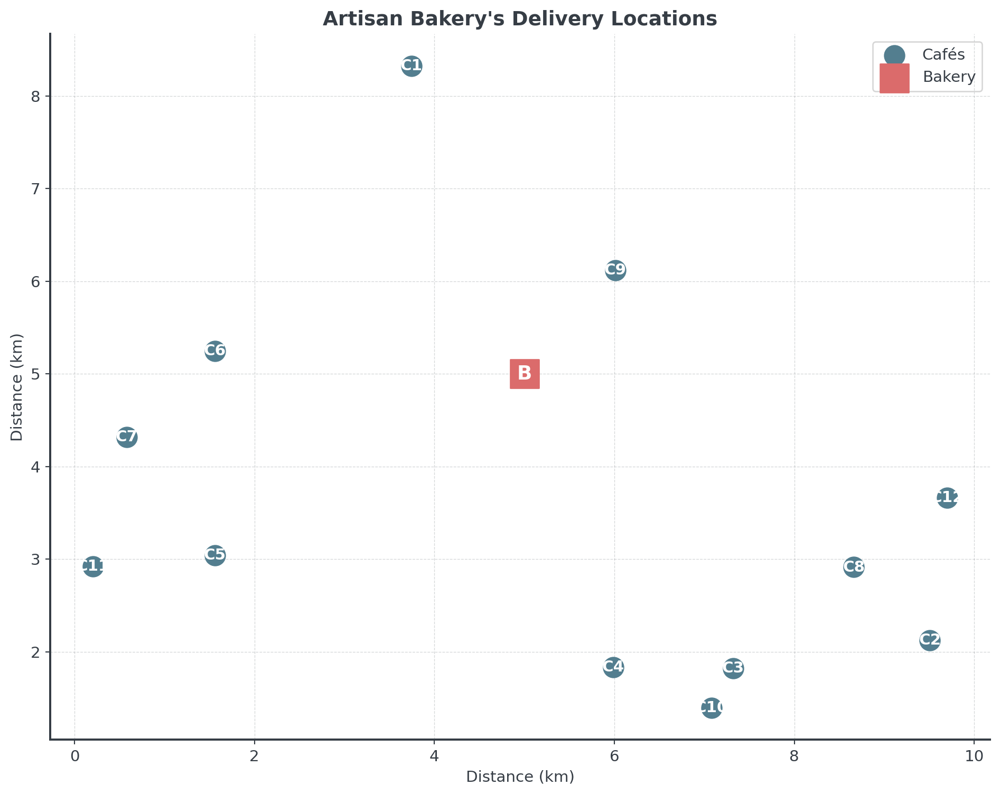
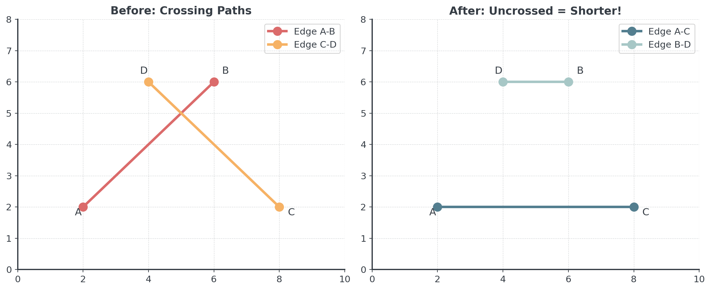
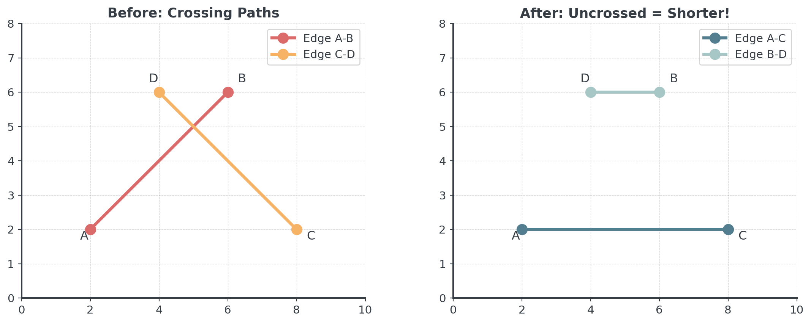
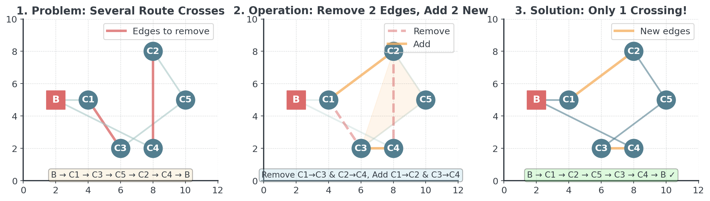
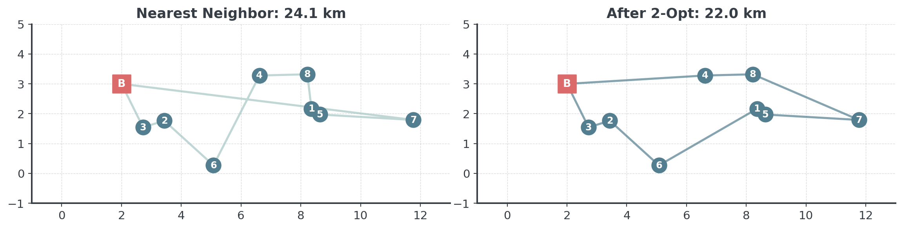
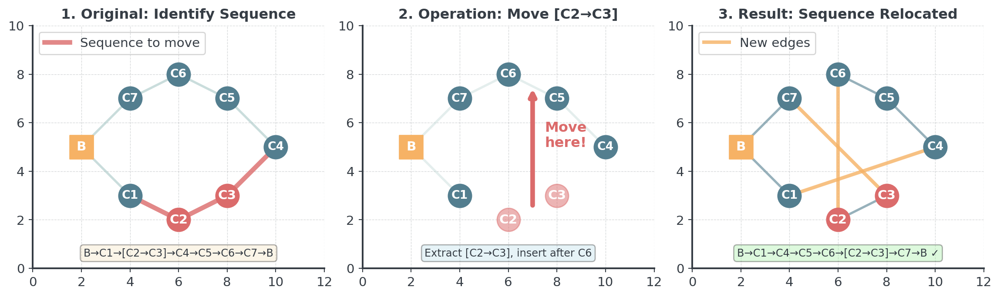
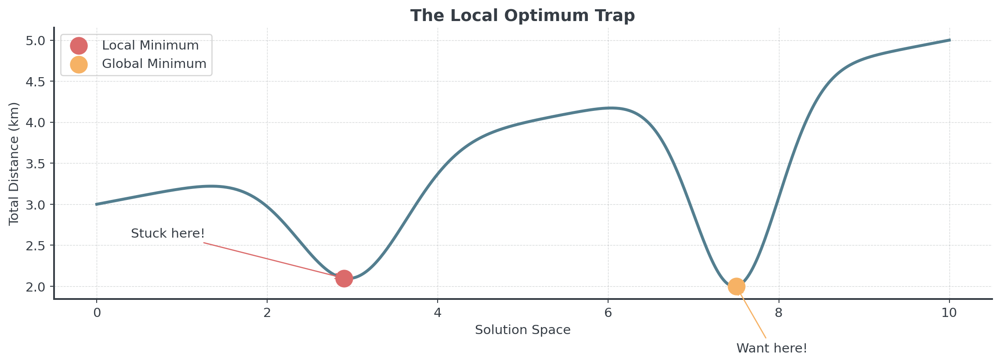

Better Routing
Lecture 7 - Management Science
Dr. Tobias Vlćek
Introduction
Client Briefing: Artisan Bakery
Master Baker’s Morning Dilemma:
“Every morning at 5:00, our delivery van leaves with fresh bread for 16 cafés across the city. Our driver currently takes much too long using his ‘intuition’ for the route. The fuel costs are killing us, and worse, some cafés get their bread late.”
The Delivery Challenge
Artisan Bakery’s daily logistics puzzle:
- 16 Cafés: Each expecting fresh bread by 8:00
- One Van: Unlimited capacity, must visit all locations
- Time Windows: 3 cafés open early (6:30) and need priority
- Current Problem: Driver uses “gut feeling” for routing
The Stakes: Poor routing costs plus reputation damage from late deliveries!
Quick Recap: Greedy Decisions
Last week we learned greedy algorithms for scheduling:
- SPT: Process shortest jobs first
- EDD: Process by earliest due date
- Fast & Simple: Made quick decisions, no looking back
Question: Can we use the same greedy approach for routing?
Today: We’ll start greedy, then learn how to improve solutions with local search!
The Routing Problem
The Traveling Salesman Problem
Visit all locations exactly once, minimize total distance.
Compute Everything?
How many unique tours exist? With depot, n!/2 unique tours.
If your computer checks 1 million routes per second:
- 4 cafés: 4!/2 = 12 tours → 0.000012 seconds ✓
- 8 cafés: 8!/2 = 20,160 tours → 0.02 seconds ✓
- 12 cafés: 12!/2 = 239,500,800 tours → 4 minutes ~
- 16 cafés: 16!/2 = 10,461,394,944,000 tours → 4 months! ✗
- 20 cafés: 20!/2 → 38,573 years! ✗
The Reality: Exact approach would take longer than the universe has existed!
The “Cost” of Complexity
Why buying a faster computer won’t help:
- P: Tasks that can be solved in polynomial time
- Like sorting a spreadsheet or calculating payroll
- These are safe, predictable, and easy to automate
- NP: Easy to check, hard to solve
- Analogy: easy to check if a specific password works
- Very hard to guess a password by trying every combination!
TSP optimization where we find minimum cost tour → NP-Hard. This means no known algorithm can find the perfect solution quickly for large problems.
Graph Theory Foundations
What is a Graph?
A graph \(G = (V, E)\) consists of:
- Vertices (V): The nodes or points (bakery + cafés)
- Edges (E): The connections between vertices (roads)
- Weight Function: \(w\) assigns costs to edges (distances)
For our bakery problem:
- \(|V| = 17\) (1 bakery + 17 cafés)
- \(|E| = \binom{17}{2} = 136\) possible connections
- Each edge \((i,j)\) has weight \(w_{ij}\) = distance between \(i\) and \(j\)
Complete vs. Sparse Graphs
Different graph structures lead to different complexities:
- Complete Graph: All vertices connected to each other
- TSP: \((n-1)!/2\) unique tours
- Real roads: Usually complete (drive between any two points)
- Sparse Graph: Limited connections between vertices
- Fewer edges = fewer possible routes
- Examples: Public transit networks, restricted road access
Density dramatically affects both problem difficulty and solution approaches!
Greedy Construction
A Bad Start: Random Route
What happens if we pick cafés randomly?

Random selection creates routes with many crossings and inefficiencies.
Nearest Neighbor: The Problem
Given these 8 cafés, which should we visit first?

Question: Using nearest neighbor, which café would you visit first?
Nearest Neighbor: The Algorithm
Build a route by always visiting the closest unvisited location.
- Start at the bakery
- Find the nearest unvisited café
- Go there
- Repeat until all visited
- Return to bakery
Intuition: Like picking low-hanging fruit - grab what’s easiest (nearest) first!
Nearest Neighbor: The Solution
Let’s see how nearest neighbor builds the route step by step:

Furthest insertion builds a more balanced tour by establishing the outer structure first!
Furthest Insertion: The Problem
Same 8 cafés - but now we’ll use a different strategy:

The farthest point is our start!
Furthest Insertion: The Algorithm
Build a route by starting with distant points and filling in gaps:
- Start at the bakery
- Find the furthest café from bakery - add it to tour
- Create initial tour: Bakery → Furthest → Bakery
- Repeat: Find the café furthest from current tour
- Insert it at the position that minimizes tour increase
- Continue until all cafés are in the tour
Intuition: Build the “skeleton” of the route first with distant points, then fill in the gaps.
Furthest Insertion: Step-by-Step

Notice how furthest insertion builds a more balanced tour by establishing the outer structure first, then filling in the gaps!
Comparison
Let’s compare all three construction methods:
- Random: Usually worst - no strategy at all!
- Nearest Neighbor: Fast and decent, but can create long returns
- Furthest: Often best initial solution, builds good “skeleton”
The better your starting point, the better your final result after local search!
This is also true for all other problems we are solving! A good initial heuristic to create a solution will help us later.
The Problem with Greedy
Often obvious inefficiencies in the resulting routes
- Crossing paths: Route crosses over itself
- Long return: Far from bakery at the end
- Myopic decisions: Can’t see the “big picture”
Can we improve our greedy solutions?
Local Search Framework
The Four Pillars of Local Search
Any problem can be solved with local search by defining:
- Search Space: All possible solutions (here 10 trillion routes!)
- Initial Solution: Starting point (our greedy route)
- Objective Function: How we measure quality (total distance)
- Neighborhood: How to create “nearby” solutions (2-opt swaps)
The power of local search: The same “engine” works for routing, scheduling, or any combinatorial problem - just plug in different components!
Solution Space: An Intuitive View
Think of the solution space as a landscape:
- Each point: A different route through the cafés
- Height: The total distance of that route (lower is better)
- Neighbors: Routes that differ by small change
- Local optimum: Best route among nearby alternatives
- Global optimum: The absolute best route overall
Search Strategy
How can we search this space?
- Start somewhere (greedy construction)
- Look around at neighboring solutions
- Move to better neighbors
- Stop when no neighbor is better
Local search transforms “quick and dirty” solutions into “pretty good” ones!
Local Search Improvements
The 2-Opt Algorithm
Systematically improve routes by removing crossing paths.
The Idea: Take two edges and swap them (to uncross the route)

Example: Step-by-Step
Let’s see exactly how 2-opt fixes a crossing in a real route:

The Key Insight: When you reverse a segment between two crossing edges, you automatically eliminate the crossing and create a shorter route!
How 2-Opt Works
improved = True
while improved:
improved = False
best_distance = calculate_route_distance(route, distances)
for i in range(len(route) - 1):
for j in range(i + 2, len(route)):
new_route = route[:i+1] + route[i+1:j+1][::-1] + route[j+1:]
new_distance = calculate_route_distance(new_route, distances)
if new_distance < best_distance:
route = new_route
best_distance = new_distance
improved = True
break
if improved:
breakThe [::-1] reverses the segment, eliminating crossings!
2-Opt Applied
Let’s see how this changes the route!

Notice how 2-opt removed the crossing paths from our nearest neighbor solution, creating a more efficient route!
Common 2-Opt Bugs
Debug these scenarios you’ll encounter:
Bug 1: Infinite Loop
Bug 2: Missing Return to Start
Bug 3: Invalid Segment Reversal
Fix: route[:i+1] + route[i+1:j+1][::-1] + route[j+1:]
What About 1-Opt?

Where 1-opt DOES work: In problems like knapsack (swap 1 item), assignment (reassign 1 person), or facility location (relocate 1 facility).
Or-Opt: Moving Sequences
Moves sequence of 1-3 consecutive cities to different position.

Moving a sequence can satisfy time constraints without breaking tour structure!
Beyond: k-Opt Neighborhoods
The k-opt family of improvements:
2-opt
- Removes 2 edges
- 1 way to reconnect
- n² combinations
- Fast, good results
3-opt
- Removes 3 edges
- 7 ways to reconnect
- n³ combinations
- Better but slower
Or-opt
- Moves 1-3 nodes
- Good for time windows
- Specialized variant
Start with 2-opt (fast), use 3-opt if you have time! As k increases, solutions improve but computation time grows exponentially.
Local Optima
Convergence and Local Optima
When does local search stop? Why might it get stuck?
Convergence:
- Algorithm stops when no neighboring solution is better
The Local Optimum Problem:
- Algorithm can only “see” neighboring solutions
- Might miss better solutions that require multiple changes
- Like being stuck on a small hill when there’s a mountain nearby
Local search for improvement but does not guarantee global optimality.
The Local Optimum Trap
Imagine you’re a hiker dropped in foggy mountains at night…
- Your Mission: Find the highest peak (global optimum)
- Your Tool: An altimeter (objective function)
- Your Vision: Only the ground at your feet (local neighborhood)
- The Greedy Strategy: Always step uphill
Question: What happens when you reach the top of a small hill?
You’re stuck! Every step is downhill, but you might be on a tiny hill while a much larger moutain is nearby. This is the local optimum trap!
Visualizing Local Optima

Here, the local minimum is already quite good, but we likely won’t reach the global optimum from here.
The Reality
Real problems often have thousands of local optima!

The probability of finding the global optimum with simple local search is nearly zero!
Escaping Local Optima
Depending on the problem: Multi-Start Strategy!
- Most local minima are much worse than the global optimum
- The global minimum is sometimes isolated and hard to reach
- Starting point dramatically affects final solution quality
- Thus, start with different random solutions
- Use different initial heuristics
No Free Lunch Theorem: There’s no universal “best” algorithm for all problems. What works great for routing might fail for scheduling. Always match your tool to your problem!
How Good is Good Enough?
Industry usage for delivery optimization
| Method | Industry Use | |
|---|---|---|
| Human intuition | Still common! | |
| Start + 2-opt | Common practice | |
| Advanced Meta | Sometimes practice | |
| Exact (if possible) | Mostly research |
A 10% improvement = millions in savings for large logistics companies. Even a 2-opt implementation could literally save a lot of money if not used yet!
Time Constraints
Time Windows
Remember our bakery? Some cafés open earlier than others!
Artisan Bakery’s Morning Schedule:
- Bakery opens: 5:00 (van departs)
- Early Birds (3 cafés): Must receive by 6:30
- Café Europa, Sunrise Bistro, Morning Glory
- Standard (13 cafés): Must receive by 8:00
Question: Can we just find the shortest route?
The shortest route might deliver to early cafés last. Feasibility first, optimization second!
Time Windows: Practical Approach
Each location has a delivery time window:
Key Concepts:
- Earliest time: When café opens
- Latest time: Delivery deadline
- Service time: Time to unload
Arrival Time = Previous departure + Travel time
- Feasible route: All deadlines met
- Infeasible route: At least one deadline missed (even if shortest!)
Time Windows: NN Modification
Modify greedy construction to prioritize early deadlines:
unvisited = set(range(len(locations))); route = []; current_time = start_time
while unvisited:
# Find feasible neighbors (can reach before deadline)
feasible = [i for i in unvisited
if current_time + travel_time(current, i)
<= time_windows[i]['latest']]
if not feasible:
return None # No feasible route exists!
# Among feasible, choose most urgent
next_stop = min(feasible, key=lambda i: (time_windows[i]['latest']))
# Update state
route.append(next_stop)
unvisited.remove(next_stop)
current_time += travel_time(current, next_stop) + service_time2-Opt with Time Windows
Problem: 2-opt can break time feasibility!

Early2 now arrives at 7:12 AM. Missed its 6:45 deadline by 27 minutes!
The Solution
Only accept swaps that maintain feasibility!
improved = True
while improved:
improved = False
for i in range(len(route) - 1):
for j in range(i + 2, len(route)):
new_route = route[:i+1] + route[i+1:j+1][::-1] + route[j+1:]
# Check feasibility FIRST
if not is_feasible(new_route, time_windows, start_time):
continue # Skip infeasible swaps
# Among feasible swaps, take if shorter
if calculate_distance(new_route) < calculate_distance(route):
route = new_route
improved = True
break
if improved:
breakFeasibility is a hard constraint, distance is the objective.
Briefing
Choosing Your Algorithm
Different situations call for different approaches:
| Situation | Best Approach | Why |
|---|---|---|
| Solution now | Nearest Neighbor | Lightning fast |
| Have seconds | NN + 2-opt | Good balance |
| Have minutes | Multi-start + 2-opt | Explore more options |
| Time windows | NN (early) + Or-opt | Preserves feasibility |
| Benchmark | 3-opt or meta | Best solutions |
Competition? Choose whatever you are comfortable with.
Implementation Pitfalls to Avoid
Common bugs that cost you time.
Forgetting return to bakery:
Escaping Local Optima
When local search gets stuck, we need clever escapes:
Advanced Techniques Coming:
- Simulated Annealing: Sometimes accept worse moves
- Genetic Algorithms: Combine good routes to make better ones
- Tabu Search: Remember where you’ve been to avoid circles
Today’s local search foundation makes advanced methods possible!
Summary
Key Takeaways:
- TSP is computationally hard (factorial growth)
- Local search is a universal framework (4 pillars)
- Greedy construction gives fast initial solutions
- 2-opt improves solutions iteratively
- Multi-start helps escape local optima
- Real constraints (time windows) add complexity
- Two-phase approach: Build then improve!
Better Routing | Dr. Tobias Vlćek | Home